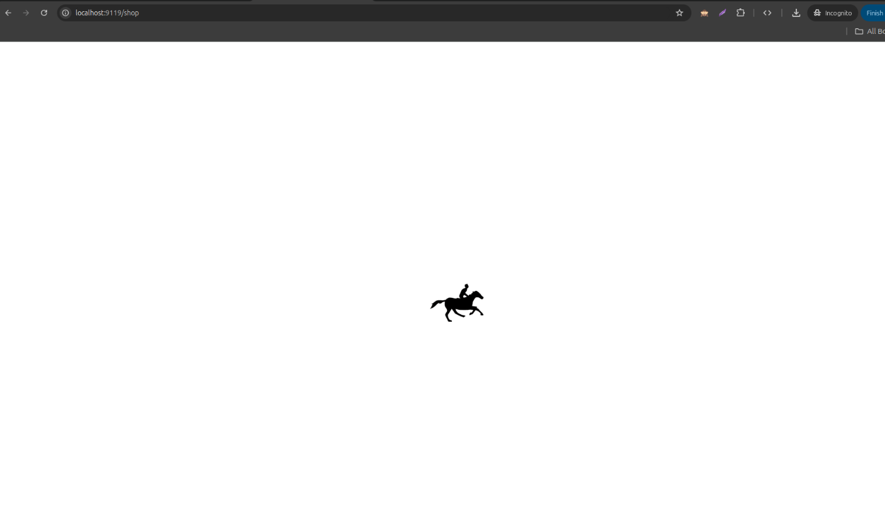

Enhance your Odoo website with a smooth, lightweight and visually appealing animated GIF loading spinner for a better visitor experience.
Compatible with Odoo v19

Website Unique Loading Spinner replaces the plain loading experience of your Odoo website with a modern animated GIF spinner. It provides a full-screen loading overlay while website pages and their resources are loading, followed by a smooth fade-out when the page is ready.
prefers-reduced-motion for better accessibility
Website Page Starts Loading
When a visitor opens an Odoo website page, the full-screen loading overlay is displayed while the page and its resources are being loaded.
Animated GIF Spinner
The module displays a smooth animated GIF spinner to provide a clear visual indication that the website is loading. The GIF can be replaced with your own custom loading animation.
Smooth Page Transition
Once the website page is ready, the loading overlay smoothly fades away and the visitor can interact with the website normally.
Smart Fallback Protection
A built-in fallback timer automatically hides the loading overlay if the normal page loading event takes too long. This prevents visitors from becoming stuck on the loading screen.
Easily customize the loading experience by replacing the default GIF with your own animated loading image. This allows you to match the loading animation with your website design or company branding.
Default spinner location:
static/src/img/spinner.gif
The module is designed to remain lightweight and efficient. It uses an animated GIF and lightweight JavaScript without third-party JavaScript libraries or external dependencies.
Designed specifically for Odoo 19 website frontend pages. The module depends only on the standard Odoo Website module.
Odoo 19.0